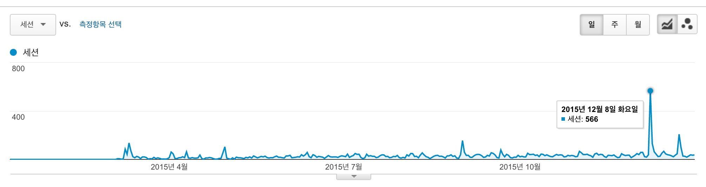

2015년 블로그 결산

방문자 수로 보자면 아직 보잘 것 없는 블로그지만, 어쨌든 결산을 해본다.
1. 방문자 추이

남에게 보이기 부끄러운 숫자다.
방문자수가 가장 높았던 날은 12월 8일. Django 1.9 릴리스와 주요 변경 사항 소개 글을 올렸는데, 이 글이 페이스북 장고 그룹과 페이스북 Python Korea 그룹에서 공유되면서 방문자가 급등했다.
2. 방문자수 Top 5
- 파이썬, Django와 관련된 국내 블로그
- (번역) Django Rest Framework 3 훑어보기
- (번역) 2014년에 Django로 개발하면서 실수한 부분
- Django 1.9 릴리스와 주요 변경 사항 소개
- (번역) Django에서 쿼리셋 효과적으로 사용하기
3. 연재물의 성과
번역본인 Django Rest Framework 튜토리얼은 이탈율이 적고 방문자수는 높았던 반면, 창작 연재물인 유용한 Django 플러그인을 소개합니다(=장플소) 시리즈는 이탈율이 낮긴 했으나 방문자 수도 워낙 낮아서 의미가...(또르르) 이로써 다른 연재물을 기획하자는 결론에 도달.
부족한 블로그를 찾아주신 모든 독자들께 감사합니다. 새해엔 더욱 열심히 블로깅해볼께요. ^^
기타
얼마 전에 우리 팀에 신규 입사하신 개발자가, 알고 보니 내 블로그에 종종 댓글을 달아주던 분이었다. 고맙습니다 세모님. ㅎㅎ